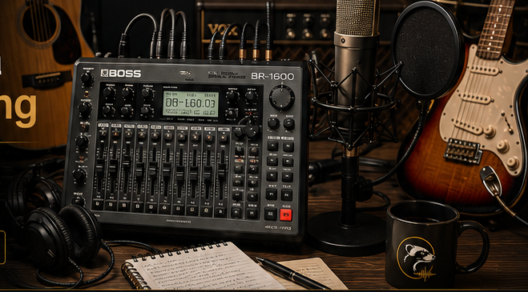

Bring what you have
Already have a backing track or play your own instrument? We can work with that.
Great songs can start anywhere. We help you turn your ideas, demos and recordings into professional songs you can be proud of.

A different kind of recording service
Start with whatever you have. We’ll help you take it from there. If you are local and it is more convenient, we can also bring our portable recording studio and equipment to you.
Already have a backing track or play your own instrument? We can work with that.
If you have nothing more than a rough recording on your phone, that’s absolutely fine too.
We listen to your demo, discuss what you want and work out the arrangement together.
Before work begins, we give you a fixed quotation so you know where you stand.
What we do
Develop a spark of an idea into a complete, original song.
Capture vocals and instruments in a relaxed, supportive setting.
Arrange and build the music around the sound you want to create.
Give your song a polished, balanced and finished sound.
Experienced musicians
Whether you need guidance from the first rough idea or help finishing the final recording, we can shape the project around you.
Have an idea for a song?
Let’s hear it.For local clients
Sometimes it is easier to record in a familiar environment. If you are local and it is more convenient, we can bring our portable recording studio and equipment to you.
That means we can work at your home, rehearsal space or another suitable local location, depending on the project.
The song comes first. The location is flexible.
Ask about a mobile recording sessionSome of our work
Replace these examples with your own tracks whenever you are ready.
Acoustic / Pop
Indie / Alternative
Rock / Pop Rock
Ready to create something?
Send us your idea, demo, lyrics or recording and we’ll get back to you.
polecatsoundworks@gmail.comEast Yorkshire, UK
Remote & in-studio sessions